Introducción
En el emocionante mundo de los videojuegos, la experiencia del jugador es una pieza fundamental. Cada vez que un jugador se sumerge en un juego, está buscando una experiencia única, entretenida e inmersiva. Detrás de esta experiencia se encuentra el arte del "Diseño de Juegos y Jugabilidad", un campo que abarca la creación de niveles, la narrativa y la jugabilidad en los videojuegos. Este campo ha evolucionado significativamente a lo largo de los años, transformando cómo interactuamos con los mundos virtuales y cómo nos involucramos con las historias que se nos presentan. El presente estudio se adentrará en el corazón del diseño de juegos y su influencia en la experiencia del jugador. Analizaremos cómo la cuidadosa planificación de niveles, la narrativa cautivadora y la jugabilidad emocionante pueden cautivar a los jugadores y mantenerlos inmersos durante horas. Además, exploraremos cómo las tendencias actuales en el diseño de juegos están dando forma a la industria, y cómo los desarrolladores buscan constantemente innovar y superar las expectativas de los jugadores. A lo largo de esta investigación, desglosaremos los elementos esenciales del diseño de juegos y su impacto en la jugabilidad, examinaremos ejemplos destacados de juegos que han dominado estos aspectos y discutiremos las estrategias que los diseñadores emplean para crear experiencias memorables. Al hacerlo, esperamos arrojar luz sobre cómo el diseño de juegos y la jugabilidad pueden elevar la experiencia del jugador a nuevas alturas, creando mundos virtuales que son mucho más que simples entretenimientos: son aventuras emocionantes y memorables que perduran en la mente de quienes los experimentan.
Propósito de la investigación
"El propósito de la investigación es explorar en profundidad cómo el diseño de niveles o como todos lo conocen "Level Design", la narrativa y la jugabilidad en los videojuegos influyen en la experiencia del jugador. Nos proponemos analizar cómo estos elementos se relacionan entre sí y cómo pueden ser mejorados para lograr una mayor inmersión y retención del usuario en el mundo de los videojuegos. A través de esta investigación, buscamos comprender las tendencias actuales en el diseño de juegos y cómo estás pueden aplicarse para crear experiencias más emocionantes y envolventes para los jugadores."
El diseño de niveles también se conoce como diseño de entorno o mapeo de juegos, ya que influye de manera significativa en la experiencia del jugador. Se refiere a la creación y configuración de los espacios, desafíos y objetivos que un jugador encontrará a lo largo de su trayecto en el juego. El objetivo principal del diseño de niveles es garantizar que la jugabilidad sea emocionante, equilibrada y satisfactoria. 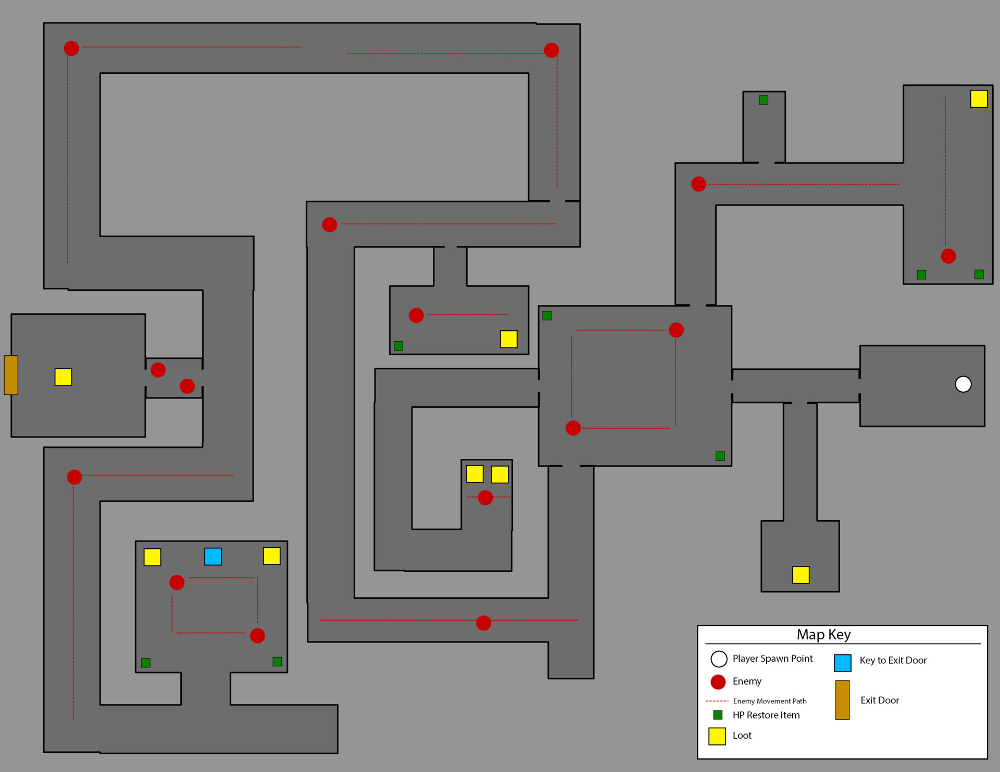 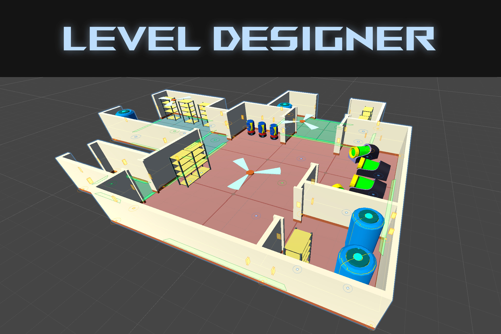
¿Cuál es la importancia del diseño de niveles?
El diseño de videojuegos tiene mucha importancia en la experiencia del jugador, por lo que es fundamental dedicarle tiempo a la hora de desarrollar el videojuego. Su importancia radica en los siguientes puntos:
- Jugabilidad y desafío.
El diseño de niveles determina de qué manera los jugadores van a interactuar con el juego y cómo se enfrentarán a los desafíos. - Inmersión y narrativa:
Hay que conseguir que los jugadores vivan una inmersión en la narrativa del juego, a través de la creación de un entorno coherencia y una progresión lógica. - Variedad y exploración:
La variedad evita la monotonía y el aburrimiento, por lo que el jugador mantiene el interés.
Juegos con un buen level design
Portada

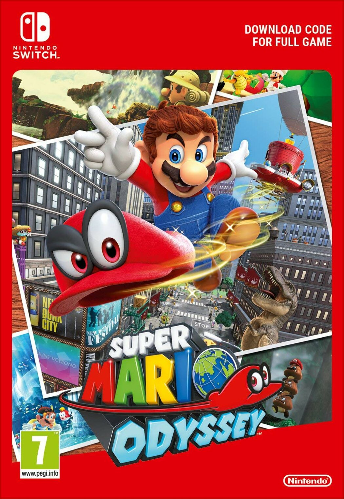
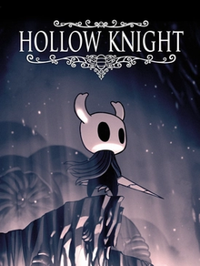
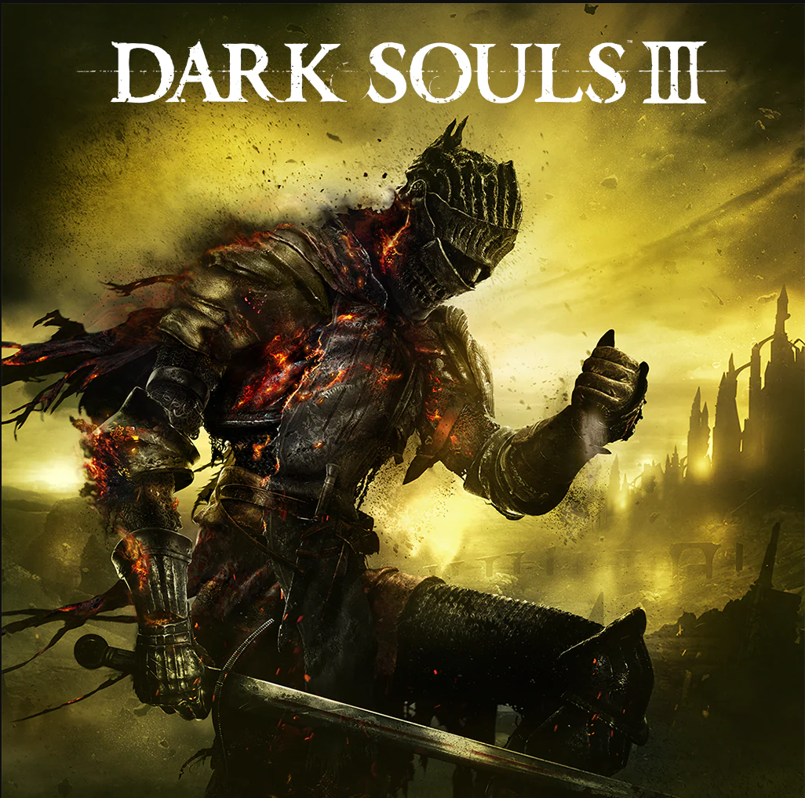

Nombre de los Juegos
Mecanicas Principales
Narrativa y Emoción en los Videojuegos
Narrativa
La creación de la narrativa en los videojuegos forma parte esencial del proceso de desarrollo, donde el equipo creativo establece la estructura de la historia y los elementos emocionales clave. Aquí es donde cobran vida aspectos como el tema central, la trama, los personajes y los diálogos. La adaptación global del diseño narrativo asegura que la emoción transmitida por la historia y sus personajes llegue a los jugadores de todo el mundo. Cuando un estudio logra un gran éxito en un mercado concreto, el equipo de diseño narrativo de Lionbridge Games se encarga de adaptar el juego para que triunfe en un nuevo mercado, sin perder la esencia del juego original.
Shin comenta: "Colaboramos estrechamente con el cliente para plasmar su visión, teniendo en cuenta la comodidad y la comprensión del público objetivo. Revisamos minuciosamente el material y proporcionamos retroalimentación al cliente sobre cualquier problema identificado. Si se trata de una corrección simple, se resuelve rápidamente. En caso contrario, mantenemos una comunicación abierta con el cliente, ya que es fundamental que nos explique las razones detrás de sus decisiones o de la elección de un enfoque específico en la redacción".
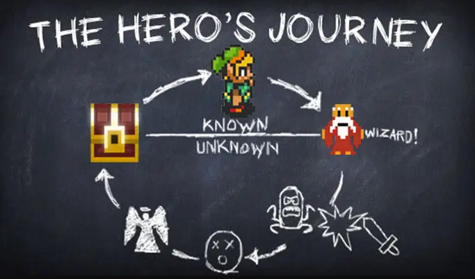 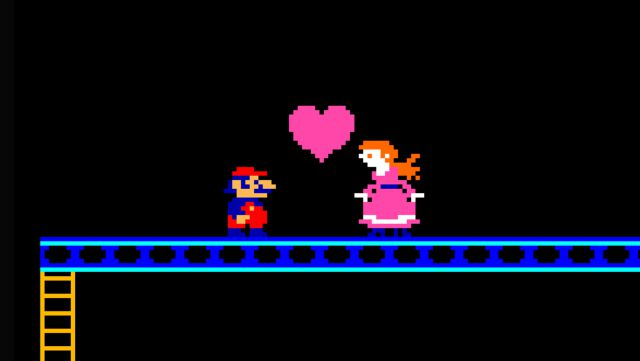

Emociones
En la sociedad actual, es común encontrar una percepción negativa en torno al uso de los videojuegos. Es indudable que existe un número significativo de personas que pueden abusar de ellos, lo que podría afectar negativamente su desarrollo y su vida diaria.
Sin embargo, es importante preguntarse cuáles son los beneficios que pueden surgir al utilizar los videojuegos de manera adecuada. Según múltiples investigaciones, podemos observar que los videojuegos tienen un impacto positivo en la mejora de:- La autoestima, la seguridad personal
- En la motivación de logro y de autosuperación
- En la motivación hacia el aprendizaje y en procesos de atención que ayudan a aumentar el aprendizaje del individuo.
También se ha demostrado que los videojuegos se convierten cada día más en una manera de comunicarse, de transmitir emociones y conocimientos, de tomar decisiones y de expresarse, a la vez que suponen un campo de prueba social en donde se pueden ensayar diferentes roles ya que, la persona se identifica con el personaje. No solo las emociones positivas influyen en el aprendizaje, como puede ser la motivación, sino que también, la frustración producida por los videojuegos puede generar una mayor persistencia con el fin de superar los objetivos que se plantean.
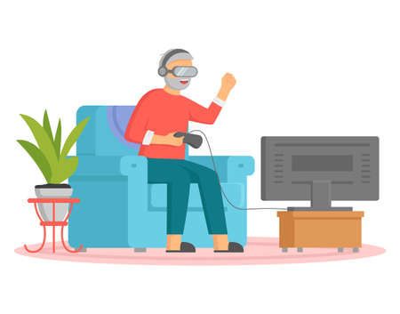Jugabilidad y Retención del Jugador
| 1. Logros | Los logros son hoy en día una pieza indispensable en los videojuegos, no importa el género. Parte de la idea de que el jugador tiene que realizar ciertas actividades para obtener estos logros, yendo desde los más fáciles hasta los más difíciles, depende principalmente de cuanto queramos hacer sufrir a los jugadores para conseguirlos. Al final puede haber un premio o no por obtener todos los logros, pero en general ya el obtenerlos es satisfactorio. |
|---|---|
| 2. Misiones | Las misiones le dan al usuario la variedad en un juego, de tal forma que no sienta que juega el mismo nivel muchas veces. En juegos de tipo infinitos parece un poco repetitivo los escenarios, sin embargo es el tipo de dificultad conforme avanza lo que garantiza que aunque no exista un nivel específico si exista un cambio de elementos cada cierto tiempo de juego. |
| 3. Recompensas diarias | El hecho de que cada día que abres el juego te den 10, 100 monedas, o cualquier recompensa pequeña garantiza un estímulo para el jugador para que al día siguiente vuelva a abrir el juego. El problema con las recompensas diarias es saber equilibrarlas, porque si damos recompensas con un alto valor ponemos en peligro el demás valor del juego, pero si les damos recompensas muy pobres podríamos insultar al usuario ya que no le servirían de mucho. El factor es el equilibrio entre lo que le puede server y lo que puede esperar por ello. |
 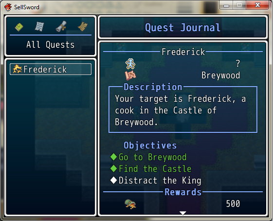
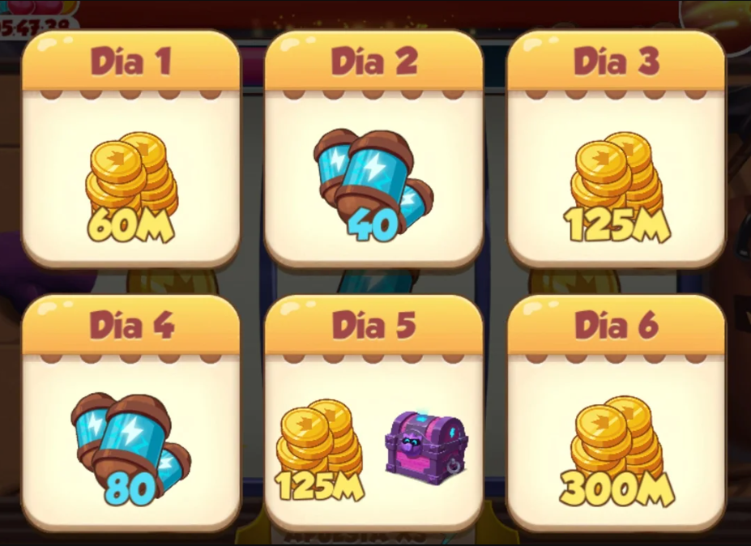
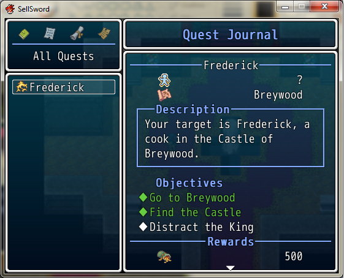
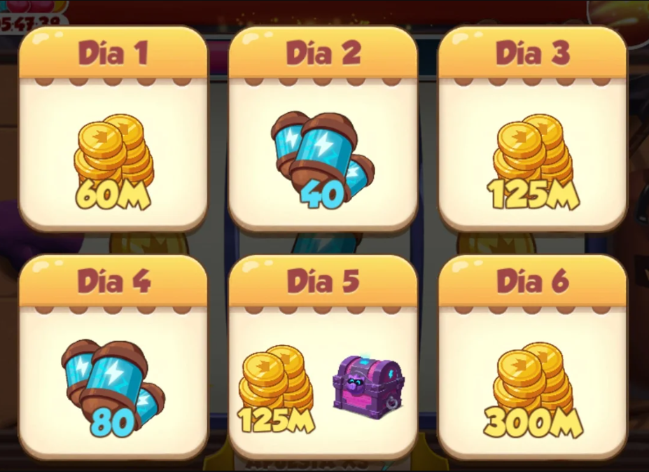
Mejoras y Tendencias en el Diseño de Juegos
Desde sus inicios, el mundo de los videojuegos ha evolucionado constantemente. Lo que fue popular en el pasado puede no serlo hoy en día, ya que los gustos cambian, la tecnología avanza y surgen nuevas ideas. No obstante, la creatividad e innovación de los desarrolladores de videojuegos siempre permanece constante. En este artículo, exploraremos algunas tendencias emergentes en el diseño de videojuegos, ideas que están ganando relevancia y que seguramente veremos más en los próximos años.
- Juegos en la nube
Los juegos en la nube están revolucionando la industria de los videojuegos. Plataformas como Microsoft Game Pass permiten disfrutar de juegos de alta calidad sin una consola física. Solo necesitas un dispositivo con internet y una suscripción. Esto te da la flexibilidad de jugar en cualquier lugar, haciendo que los juegos sean más accesibles y económicos para todos. - Realidad Virtual
La realidad virtual avanza en el mundo de los videojuegos. Aunque aún se está desarrollando, ofrece experiencias inmersivas. Esta tecnología se basa en dispositivos cada vez más pequeños y precisos. Con su mejora, surgen más juegos y formas de interactuar en el mundo virtual, convirtiendo a la realidad virtual en una tendencia popular. - Juegos Indie
Los juegos independientes, o "indie games", ganan terreno en el mundo de los videojuegos. Son creados por desarrolladores independientes, sin el respaldo de grandes compañías. A pesar de tener presupuestos más bajos, muchos juegos indie son igualmente divertidos y exitosos, a menudo elogiados por su originalidad. La creatividad en estos juegos se destaca debido a la libertad que tienen los desarrolladores sin las restricciones de grandes empresas.
Conclusión
En resumen, hemos explorado los puntos clave en torno al diseño de juegos y la jugabilidad. Hemos comprendido la importancia fundamental de un diseño sólido para el éxito comercial de los videojuegos. Además, hemos vislumbrado algunas de las perspectivas futuras que se perfilan en el emocionante mundo del diseño de juegos y la jugabilidad. Estas tendencias y enfoques emergentes están destinados a moldear la forma en que jugamos y experimentamos los videojuegos en los próximos años, lo que abre un abanico de oportunidades para la creatividad y la innovación en la industria del entretenimiento interactivo.